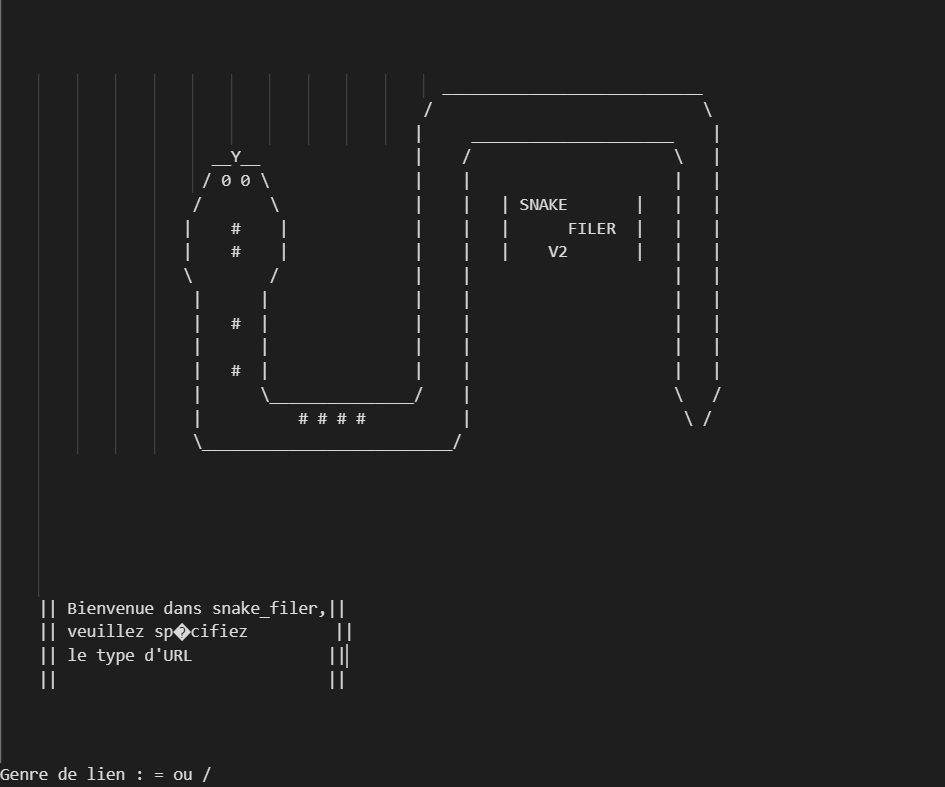

Snake_filer.py
Parlons de mon projet concernant l'automatisation du directory traversal
Le programme est fait en python et utilise la librairie "requests".

Comme je l'ai dit avant, je passe mon temps libre à faire des challenges et bientôt mon premier CTF. Je passe beaucoup de mon temps sur Portswigger
qui propose des challenges et des petits cours concernant la cybersécurité web et à lire de la documentation et CVE. Mon premier module et le première attaque informatique que j'ai étudié fut le directory traversal.
Après avoir terminé ce module, j'entrepris plusieurs recherche sur cette attaque. Je vis une multitude de possibilité, l'attaque variant selon le serveur,
l'OS dans lequel est contenu le serveur, ainsi que du type de fichier recherché. A partir de cela, j'entamais de faire un programme permettant d'automatiser
toutes ces possibilités.
Je vais détailler la construction de ce programme du nom de Snake_Filer. En commençant par le module utilisé. L'objectif de ce programmer et donc de pouvoir
essayé différente possibilité de directory traversal. Manuellement, j'utilisais l'URL pour venir introduire les liens qui me permettaient de remonter aux fichiers du serveur que je ciblais.
Pour commencer, il me fallait trouver un moyen d'agir sur l'URL avec python. Pour cela, ma première idée fut selenium. L'objectif était donc, de venir programmer
un faux clic que l'URL et d'y injecter du texte. Cependant, je me rendis compte que je pouvais faire plus simple, notamment par l'envoie de requête HTTP. Pour cela,
j'ai choisis le module requests. Ce module permet d'envoyer des requêtes HTTP au navigateur, ainsi, me permet d'agir sur l'URL sans passer par la programmation d'un faux clic, de la saisie du champs de texte de l'URL
et de l'injection d'un nouveau lien. Grâce à une requête, je peux tester différents lien, et voir leur statut code pour ensuite analyser la réponse et identifier si le directory traversal a marché ou non.
Le programme s'articule en trois fichiers différents. Le premier contient, sous la forme d'une liste généré lors de la mise en route du programme, toutes les possibilités d'URL pouvant amener à un directory traversal (voir GitHub)
Le deuxième fichier contient le programme principal, ainsi que l'affichage (cf. l'image du serpent) qui permet d'orienter l'utilisateur et de connaître le choix du dossiere que l'utilisateur veut.
Il peut s'agir d'un fichier sous windows ou linux. SOn choix permettra au programme d'être ciblé, ainsi que de faciliter l'utilisateur dans sa prise de choix concernant les documents intéressants sous widows.
Pour que le programme fonctionne, il faut impérativement prendre un lien image d'un site internet, il sera plus simple de jouer ensuite avec les différents liens.
L'image internet offre à l'utilisateur de se placer dans des fichiers bien connus (sous Linux) var/www/html/image
Le programme saura comment cisailler le lien, en utilisant donc une fonction de cisaillement,qui coupera le lien à un endroit précis et permettra ensuite d'y placer les bouts de liens contenu dans le fichier choisis par l'utilisateur.
Enfin, une étape de vérification permettra d'évaluer le statut code et de stocker le lien, seulement si le code renvoyer par le navigateur est égale à 200. Stoppant ainsi le code donnant à l'utilisateur le directory traversal.